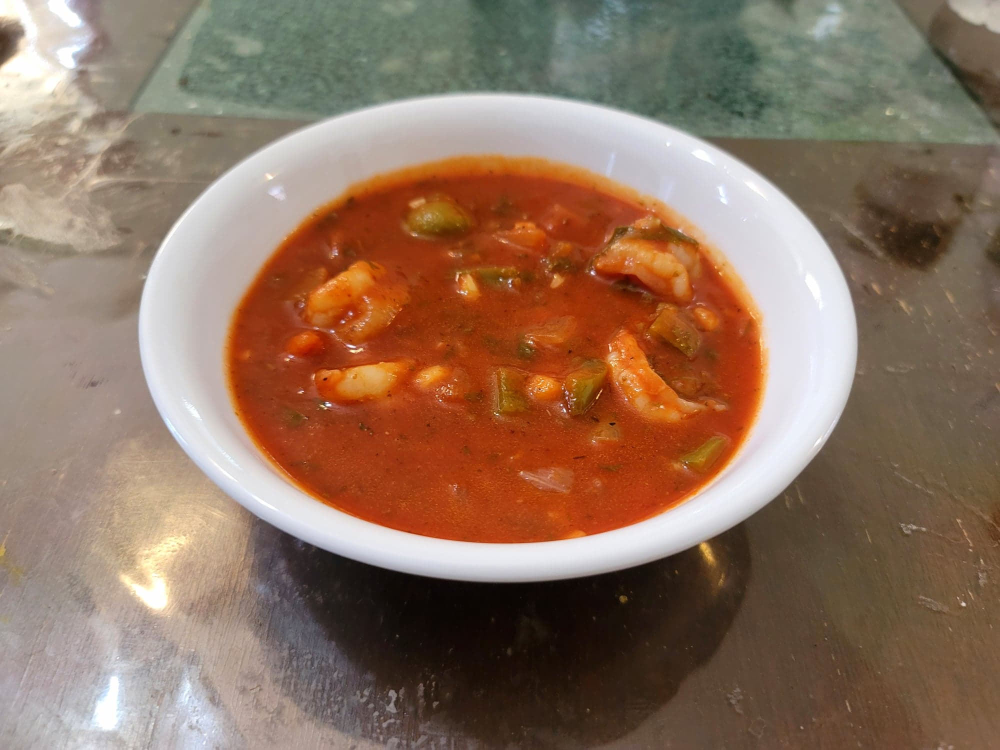

Camarones Guisados

Ingredients:
- 2 lb Shrimp, peeled and deveined
- 2 tbsp Olive oil
- 1 Yellow onion, diced
- 1 Green bell pepper, diced
- 5 cloves Garlic, minced
- 1/2 cup Pimento stuffed olives
- 1 28 oz can Tomato purée
- 1/2 cup Water
- 1/4 bunch Cilantro
- 2 Bay leaves
- 1 tsp Oregano
- 1 tsp Salt, or to taste
- 1/2 - 1 tsp Black pepper, or to taste
Instructions:
- In a pot, heat the olive oil over medium heat. Add in the onions and bell pepper and sauté until the onions are translucent, about 5-7 minutes. Then add in the garlic and sauté another minute.
- Add in the tomatoes, olives, water, cilantro, bay leaves, salt, and pepper. Stir to combine. Bring to a boil and then reduce to a simmer over medium. Cook for 5 minutes.
- Taste and adjust salt and pepper as needed. Then add in the shrimp and cook to preference, about 5-15 minutes. Then remove from heat and serve immediately.